Целью данной работы является приобретение практических навыков по установке и конфигурированию системы управления базами данных на примере программного обеспечения MariaDB.
Загрузим нашу операционную систему и перейдём в рабочий каталог с проектом. Далее запустим виртуальную машину server (рис. @fig-1):
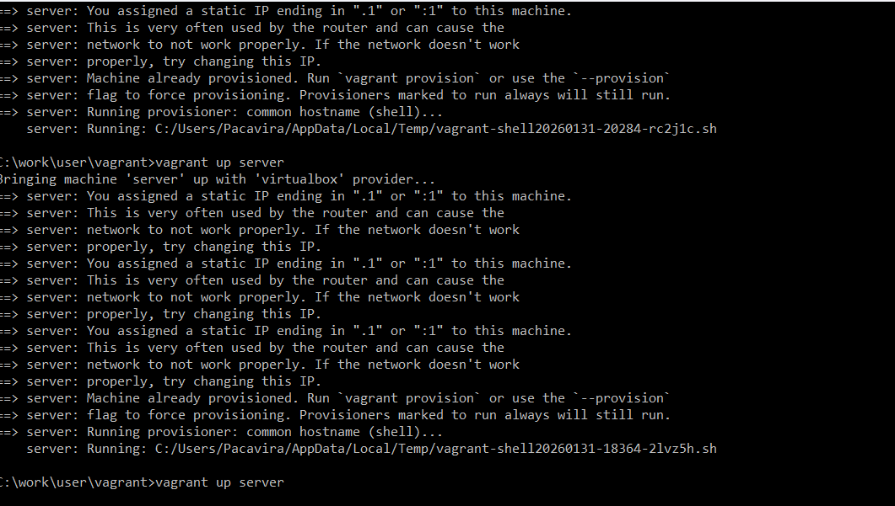
На виртуальной машине server войдём под нашим пользователем и откроем терминал. Далее перейдём в режим суперпользователя и установим необходимые для работы с базами данных пакеты (рис. @fig-2):
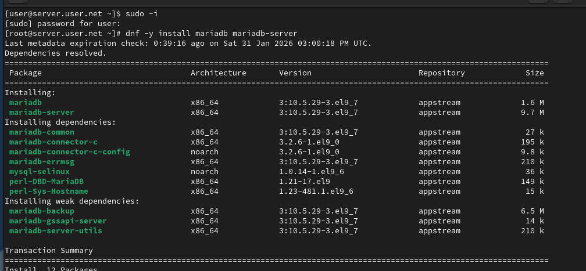
Просмотрим конфигурационные файлы mariadb в каталоге /etc/my.cnf.d и в файле /etc/my.cnf (рис. @fig-3):
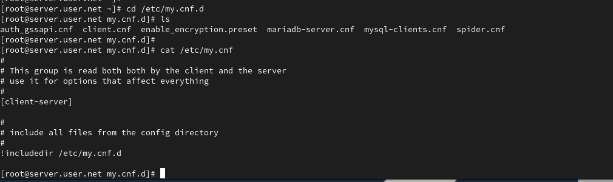
Для запуска и включения программного обеспечения mariadb используем соответствующие команды. Убедимся, что mariadb прослушивает порт, и запустим скрипт конфигурации безопасности mariadb (рис. @fig-4):
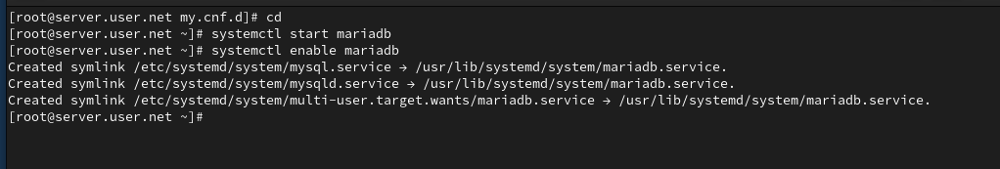
Для входа в базу данных с правами администратора базы данных введём соответствующую команду. После чего просмотрим список команд MySQL (рис. @fig-5):
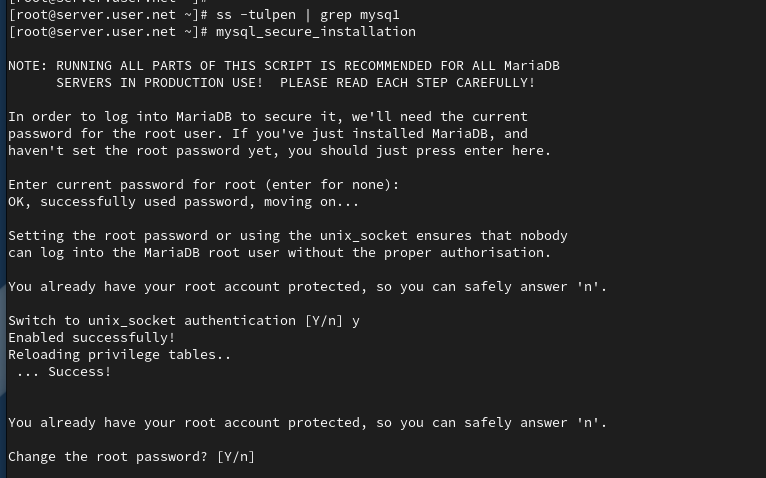
Из приглашения интерактивной оболочки MariaDB для отображения доступных в настоящее время баз данных введём MySQL-запрос. Для выхода из интерфейса интерактивной оболочки MariaDB используем соответствующую команду (рис. @fig-6):
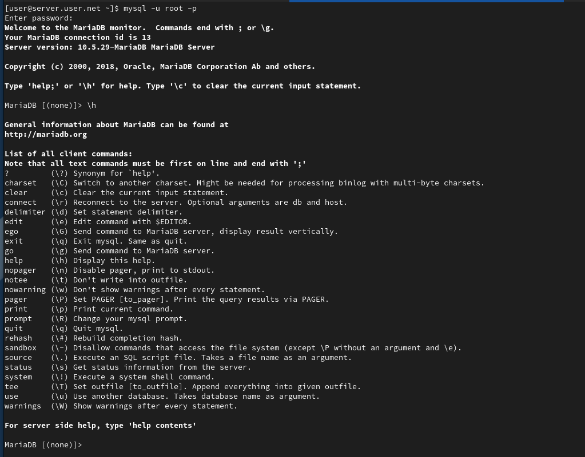
Войдём в базу данных с правами администратора. Для отображения статуса MariaDB введём из приглашения интерактивной оболочки соответствующую команду (рис. @fig-7):
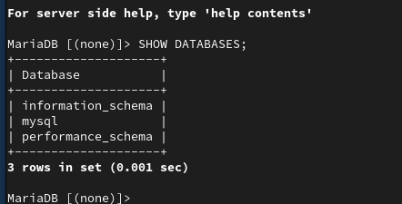
В каталоге /etc/my.cnf.d создадим файл utf8.cnf. Откроем его на редактирование и укажем в нём конфигурацию для поддержки UTF-8 (рис. @fig-8):
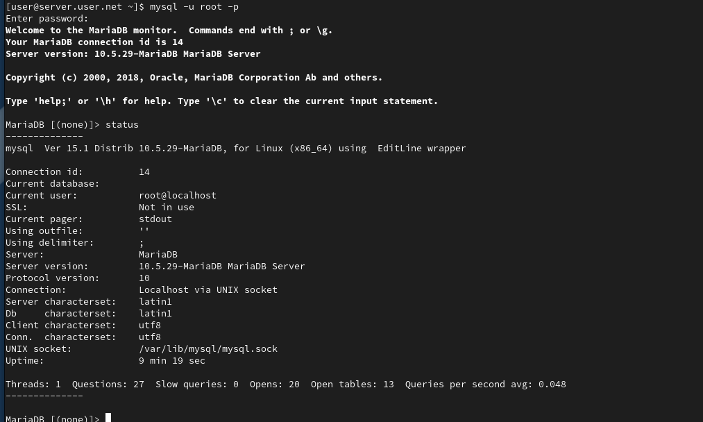
Перезапустим MariaDB для применения изменений (рис. @fig-9):
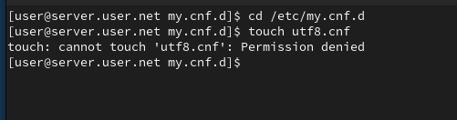
Войдём повторно в базу данных с правами администратора и посмотрим статус MariaDB для проверки изменений (рис. @fig-10):
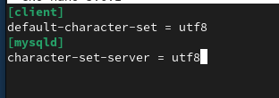
Войдём в базу данных с правами администратора. Создадим базу данных с именем addressbook. Теперь перейдём к базе данных addressbook. Отобразим имеющиеся в базе данных addressbook таблицы. Создадим таблицу city с полями name и city. Заполним несколько строк таблицы некоторыми данными (рис. @fig-11):
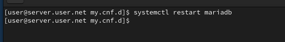
Сделаем MySQL-запрос для просмотра данных. Теперь создадим пользователя для работы с базой данных addressbook и зададим для него пароль. Предоставим права доступа созданному пользователю на действия с базой данных addressbook. Обновим привилегии базы данных addressbook. Просмотрим общую информацию о таблице city. Выйдем из окружения MariaDB (рис. @fig-12):
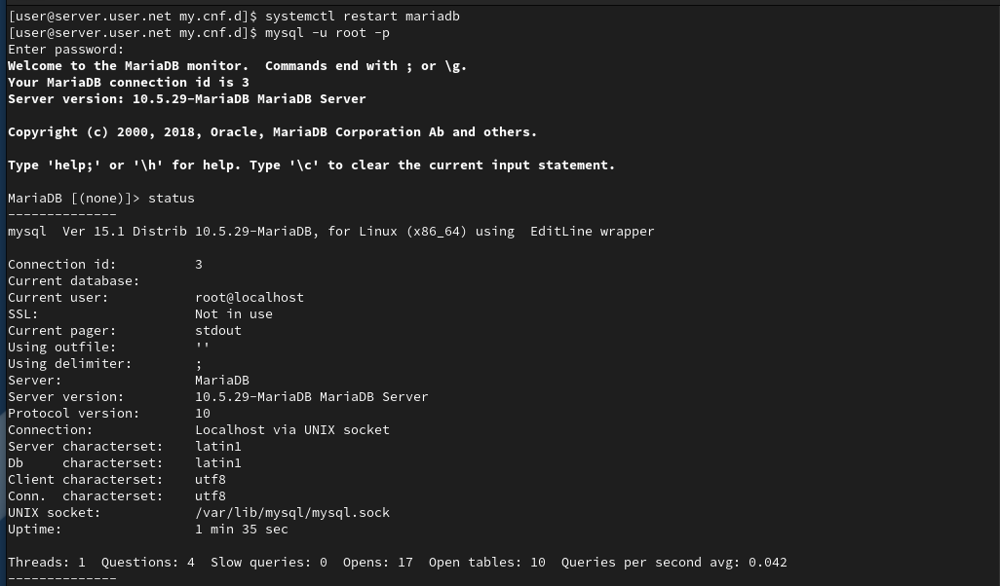
Просмотрим список баз данных. Отдельно просмотрим список таблиц базы данных addressbook (рис. @fig-13):
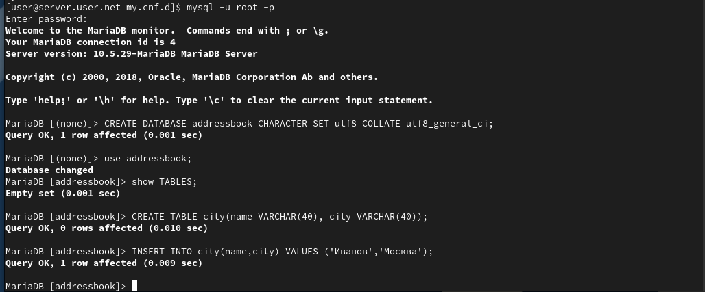
На виртуальной машине server создадим каталог для резервных копий. Сделаем резервную копию базы данных addressbook. Сделаем сжатую резервную копию базы данных addressbook. Сделаем сжатую резервную копию базы данных addressbook с указанием даты создания копии. Восстановим базу данных addressbook из резервной копии. Восстановим базу данных addressbook из сжатой резервной копии (рис. @fig-14):
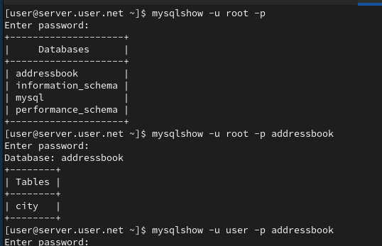
На виртуальной машине server перейдём в каталог для внесения изменений в настройки внутреннего окружения, создадим в нём каталог mysql, в который поместим в соответствующие подкаталоги конфигурационные файлы MariaDB и резервную копию базы данных addressbook. В каталоге создадим исполняемый файл mysql.sh. Откроем его на редактирование и пропишем скрипт. Для отработки созданного скрипта во время загрузки виртуальных машин в конфигурационном файле Vagrantfile добавим соответствующую запись (рис. @fig-15):
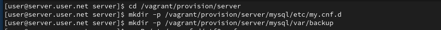
В ходе выполнения лабораторной работы были приобретены практические навыки по установке и конфигурированию системы управления базами данных на примере программного обеспечения MariaDB.
Какая команда отвечает за настройки безопасности в
MariaDB?
Настройки безопасности в MariaDB обычно управляются с помощью команды
mysql_secure_installation. Эта команда выполняет несколько
шагов, включая установку пароля для пользователя root, удаление
анонимных учетных записей, отключение удаленного входа для пользователя
root и удаление тестовых баз данных.
Как настроить MariaDB для доступа через
сеть?
Для настройки MariaDB для доступа через сеть, вы можете отредактировать
файл конфигурации MariaDB (обычно называемый my.cnf) и убедиться, что
параметр bind-address установлен на IP-адрес, доступный в вашей сети.
Также, убедитесь, что пользователь имеет права доступа извне, например,
с использованием команды GRANT.
Какая команда позволяет получить обзор доступных баз
данных после входа в среду оболочки MariaDB?
Обзор доступных баз данных после входа в среду оболочки MariaDB можно
получить с помощью команды SHOW DATABASES;.
Какая команда позволяет узнать, какие таблицы доступны в
базе данных?
Для просмотра доступных таблиц в базе данных используйте команду
SHOW TABLES;.
Какая команда позволяет узнать, какие поля доступны в
таблице?
Чтобы узнать, какие поля доступны в таблице, используйте команду
DESCRIBE table_name; или
SHOW COLUMNS FROM table_name;.
Какая команда позволяет узнать, какие записи доступны в
таблице?
Для просмотра записей в таблице можно использовать команду
SELECT * FROM table_name;.
Как удалить запись из таблицы?
Для удаления записи из таблицы используйте команду
DELETE FROM table_name WHERE condition;, где condition -
условие, определяющее, какие записи следует удалить.
Где расположены файлы конфигурации MariaDB? Что можно
настроить с их помощью?
Файлы конфигурации MariaDB обычно располагаются в различных местах в
зависимости от системы, но основной файл - my.cnf. Он может быть в
/etc/my.cnf, /etc/mysql/my.cnf или /usr/etc/my.cnf. С помощью этих
файлов можно настроить различные параметры, такие как порт, пути к
файлам данных, параметры безопасности и другие.
Где располагаются файлы с базами данных
MariaDB?
Файлы с базами данных MariaDB располагаются в директории данных. Обычно
это /var/lib/mysql/ на Linux-системах.
Как сделать резервную копию базы данных и затем её
восстановить?
Для создания резервной копии базы данных используйте команду
mysqldump. Например,
mysqldump -u username -p dbname > backup.sql. Для
восстановления базы данных из резервной копии используйте команду
mysql -u username -p dbname < backup.sql.